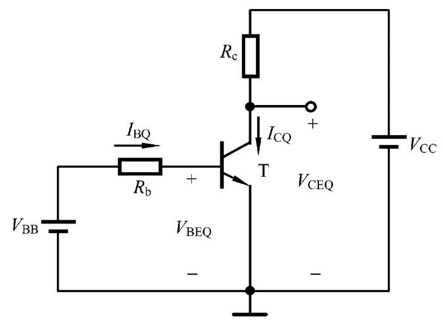
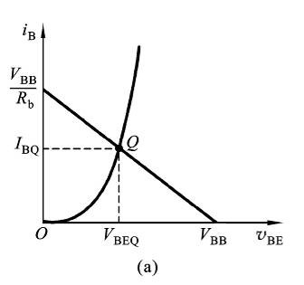
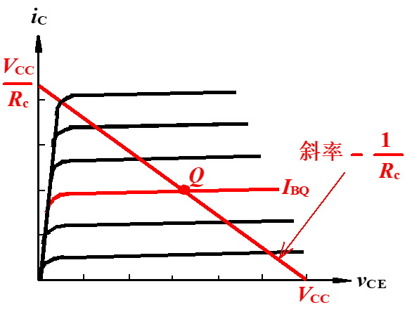
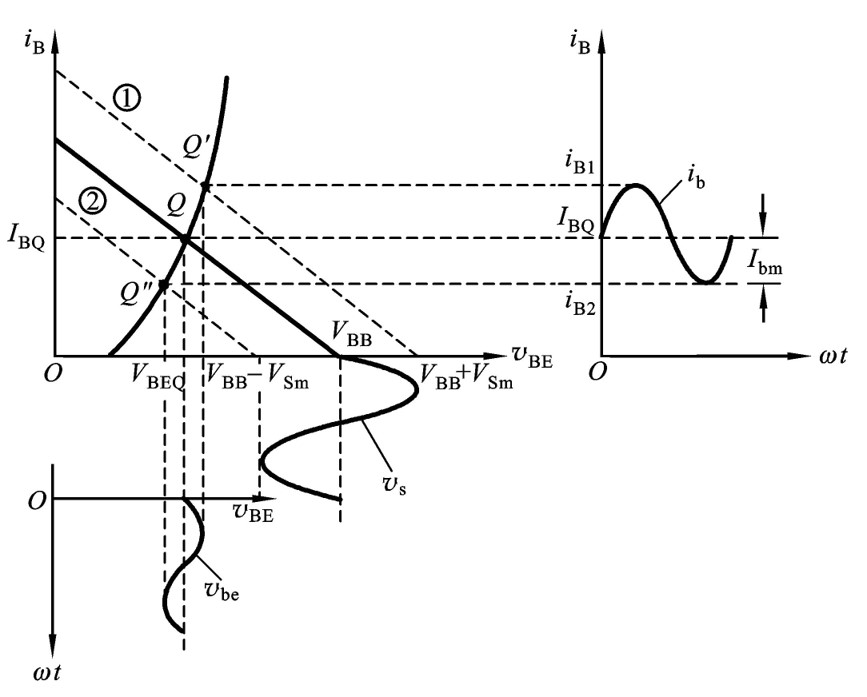
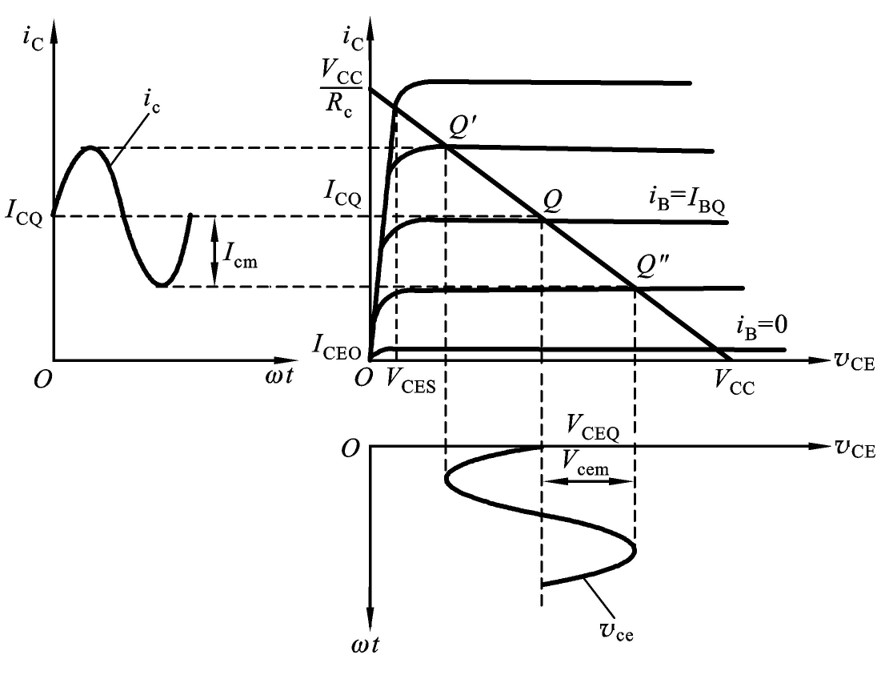
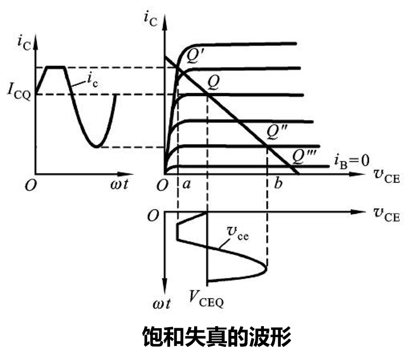
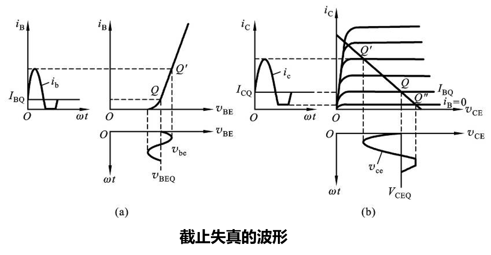
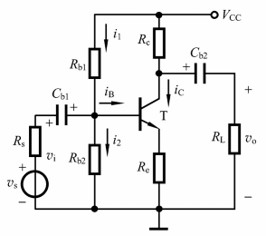

基本的共射级，工作原理，如何估算静态工作点， 重要：负载线怎么来的，怎么画 失真与静态工作点的关系 温度的影响（定性的把握） 基极分压式要认识，稳定工作的原理
三极管放大电路
在输入为交流信号时，常常在输入输出处都加入一个电容用来阻隔直流信号，防止影响外部电路。
工作原理
静态
输入信号$v_i=0$,放大电路的工作状态称为静态或直流工作状态
$I_{BQ}=\frac{V_{BB}−V_{BEQ}}{R_b}$
$I_{CQ}=\beta I_{BQ}+I_{CBO} \approx \beta I_{BQ}$
$V_{CEQ}=V_{CC}−R_c∗I_{CQ}$
一般硅管的$V_{BE}=0.7V$,锗管的$V_{BE}=0.2V$
求Q点时，一般先假设电路中BJT满足放大电路条件，求出相应的参数，然后观察是否满足放大条件。
动态
输入正弦信号$V_s$后，电路处在动态工作状态，此时各极电流电压都会在静态值的基础上随输入信号变化
- 先确定静态工作点$Q(I_{BQ},I_{CQ},V_{CEQ})$
- 再动态确定性能指标$(A_V,R_i,R_o)$
图解分析法
静态工作点的图解分析
采用此方法的前提时必须已知三极管的输入输出特性曲线
利用输入回路方程$V_{BE}=V_{BB}-i_BR_b$做出直线与输入特性曲线的交点得到$I_{BQ}$
再利用输出回路方程$V_{CE}=V_{CC}-i_CR_C$,在输出特性曲线上与$I_{BQ}$曲线对应的就是Q点。得到$V_{CEQ}$和$I_{CQ}$
动态工作的分析图解
根据$V_s$的波形，在BJT的输入特性曲线上画出$V_{BE}$和$i_B$的波形
图中参数: $V_s=V_{sm}sin(wt)$ $V_{BE}=V_{BB}+v_S-i_BR_b$
然后根据上图得到的$i_B$的变化范围在输出特性曲线上画出$i_c$和$V_{CE}$的波形(利用$V_{CE}=V_{CC}-i_CR_c$)
静态工作点对波形失真的影响
静态工作点过高
静态工作点过高会导致饱和失真
静态工作点太低
静态工作点太低会出现截止失真
所以工作点要设置在输出特性曲线放大区的中间部位，要有合适的交流负载线
tbd:ppt上思考题
温度对工作点的影响
-
温度每升高10度，$I_{CBO}$约增加一倍
- 温度上升，输出特性曲线上移
-
温度每升高1度，$\beta$值增大$0.5%-1%$
- 温度上升，输入特性曲线族间距加大
-
$V_{BE}=V_{BE(T_0=25C)}-(T-T_0)*2.2*10^{-3}V$
- 温度上升,输入特性曲线左移
基极分压式射极偏置电路
目标是：温度变化时使得$I_{CQ}$保持恒定。即我们需要**b点的电位能基本不变**，即可实现静态工作点的稳定
稳定工作点的原理:
- 保证b点电位基本不变：使$I_1»I_{BQ}$，$V_B»V_{BEQ}$,此时$V_{B}=\frac{R_{b2}}{R_{b1}+R_{b2}}V_{CC}$, 与温度无关
- 通过反馈控制：温度上升 -> $I_{CQ}$上升 -> $I_{EQ}$上升 -> $V_E$上升，$V_B$不变 -> $V_{BEQ}$下降 -> $I_{BQ}$下降 -> $I_{CQ}$下降
- Re取值越大，反馈控制作用越强
- 一般取 $I_1 =(5-10)I_{BQ}$， VB =3~5V